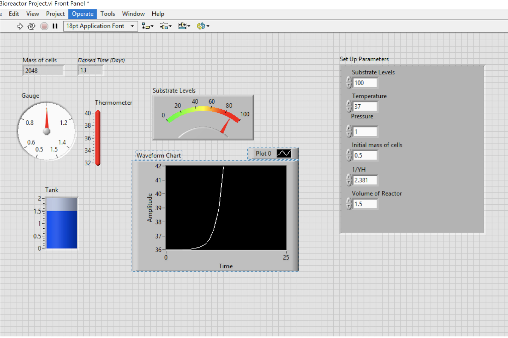

Another project of the course: Modeling of Biomedical Systems was to design a cell batch reactor that can monitor cell growth and be controlled.
Design a cell batch reactor with the neccessary paramters to monitor growth. The reactor should also be able to be controlled if key parameters become too low or high.
Using LabView, a reactor capable of monitoring substrate levels, temperature, pressure, and the volume of the reactor was created. The system also was capable of prompting the user on instruction on how to correct issues with the system such as "Lower Temperature".
Students were tasked to do this within LabView, a visual programming language, and were given freedom of what to monitor and how to make the system. Our group chose to monitor substrate levels, temperature, pressure, and the volume of the reactor while returning the mass of cells and the elapsed time of the system. Users are able to determine set up parameters and watch the system as it grows. Below is an image of the front end of the system.

| Skills Demonstrated | Project Artifacts |
|---|---|
| LabView Software | Project Report |
Provides a system that allows users to enter parameters of their cell system and then monitor the respective growth. Can be utilized when growing cells in large quantities for treatments and surgeries. Applicable to companies who wish to automate their cell system processes.